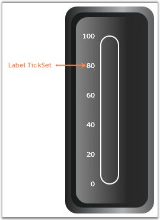

LabelTick is used to set the label value for the ticks. You can assign the LabelTick to the major or minor ticks. The default value is MajorTickSet.
|
[XAML]
<syncfusion:LinearGauge Height="450" Width="170" Orientation="Vertical" x:Name="LinearGauge1" RadiusX="20" RadiusY="20" InnerFrameOffset="15" OuterFrameOffset="20"> <syncfusion:LinearGauge.Scales> <syncfusion:LinearScale Minimum="0" Maximum="100" Foreground="#7B7C7C" MajorIntervalValue="20" MinorIntervalValue="10" ScaleBarSize="30" ScaleBarLength="250" ShadowOffset="4" BorderBrush="White" BorderThickness="2" RadiusX="15" RadiusY="15"> <syncfusion:LinearScale.Ticks> <syncfusion:LabelTickSet Foreground="White" TickPlacement="Inside" DistanceFromScale="10" TickStyle="MajorTick"/> </syncfusion:LinearScale.Ticks> </syncfusion:LinearScale> </syncfusion:LinearGauge.Scales> </syncfusion:LinearGauge> |
|
[C#]
LabelTickSet labeltickset = new LabelTickSet(); labeltickset.DistanceFromScale = 25; labeltickset.Foreground = new SolidColorBrush(Colors.White); labeltickset.TickStyle = TickStyle.MajorTick; labeltickset.FontSize = 12; labeltickset.TickPlacement = ScalePlacement.Cross; linearscale.Ticks.Add(labeltickset); |

Figure 79: Label TickSet added to the Scale